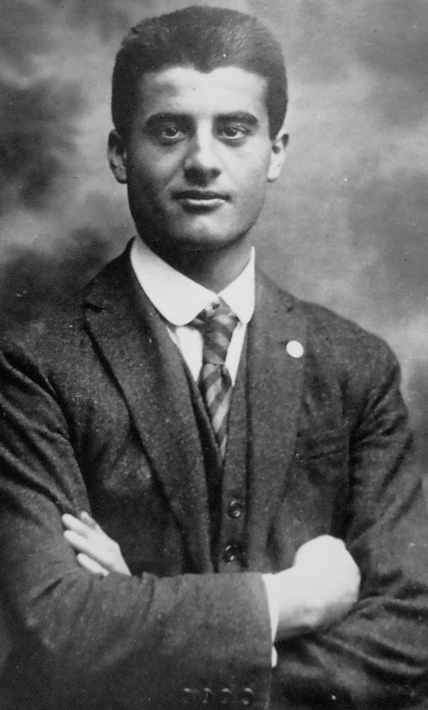
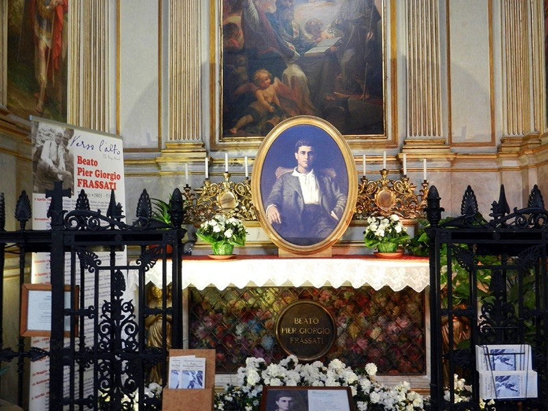
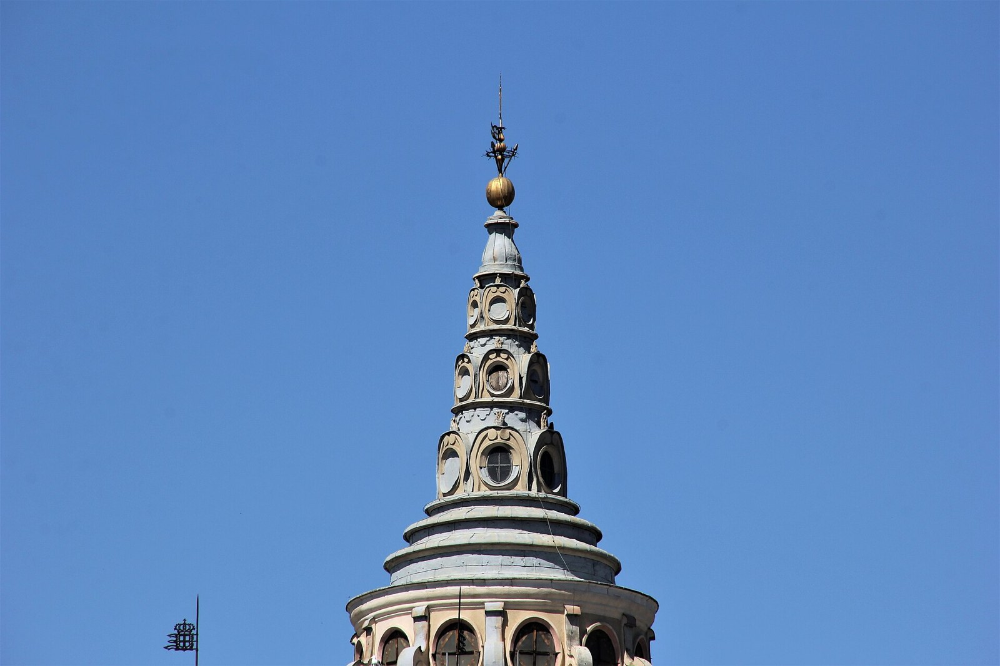
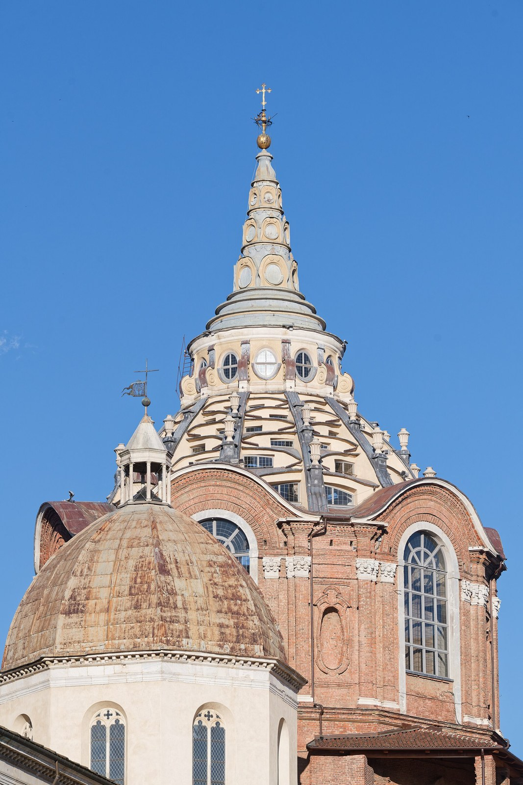
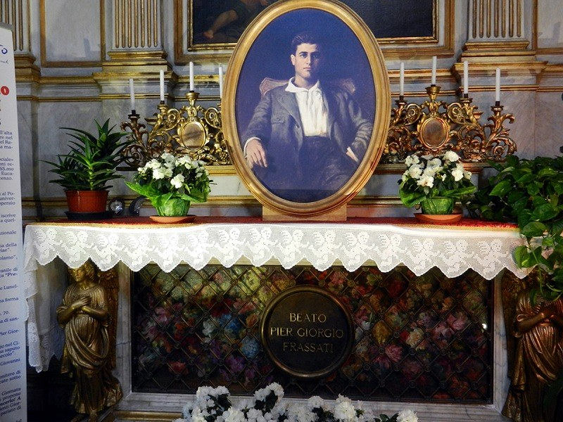

Luciana Frassati · Wikimedia Commons · Public domainJuan Manuel Gutiérrez: o tendão rompido
Reconhecido pela Santa Igreja CatólicaO RELATO
Pier Giorgio Frassati nasceu em Turim, na Itália, em 6 de abril de 1901, e morreu na mesma cidade em 4 de julho de 1925, aos 24 anos, de poliomielite. Era leigo da Ordem Terceira de São Domingos. Levava ajuda aos pobres de Turim em carrinhos, e os amigos o apelidaram de "Empresa de Transportes Frassati". Para ele, a caridade era "o fundamento da nossa religião". João Paulo II o beatificou em 1990 e o chamou de "homem das bem-aventuranças".
Juan Manuel Gutiérrez é mexicano. Por volta dos 14 anos, declarou-se ateu. Aos 19, voltou à fé depois de um retiro em Omaha, no Nebraska. Em 2013, começou a formação para o sacerdócio na Casa de Formação Juan Diego, da Arquidiocese de Los Angeles, e depois seguiu para o Seminário de São João, em Camarillo, na Califórnia.
Em 2017, num jogo de basquete com outros seminaristas, rompeu o tendão de Aquiles. Uma ressonância magnética confirmou a ruptura em 31 de outubro, e o médico indicou cirurgia. Em 1º de novembro, festa de Todos os Santos, Gutiérrez começou uma novena ao Beato Pier Giorgio Frassati. Conhecia pouco a vida dele e prometeu relatar qualquer graça recebida. Durante a novena, sentiu calor no calcanhar ferido enquanto rezava na capela do seminário. Em 15 de novembro, seis dias depois do fim da novena, o cirurgião refez o teste do tendão e não encontrou a ruptura. A cirurgia deixou de ser necessária.
Em 2020, Gutiérrez procurou o monsenhor Robert Sarno, ex-oficial do dicastério romano das Causas dos Santos e professor no seminário. Com a aprovação do arcebispo José Gomez, Sarno abriu em Los Angeles a investigação canônica diocesana. Gutiérrez foi ordenado padre em junho de 2022. Em 25 de novembro de 2024, em audiência ao cardeal Marcello Semeraro, o Papa Francisco autorizou a promulgação do decreto sobre o milagre, após o parecer favorável da sessão ordinária de cardeais e bispos do Dicastério para as Causas dos Santos.
Em 7 de setembro de 2025, na Praça de São Pedro, o Papa Leão XIV canonizou Pier Giorgio Frassati e Carlo Acutis. Na homilia, lembrou uma frase de Frassati: "Em torno dos pobres e dos doentes, vejo uma luz que nós não temos". Desde 1990, depois da beatificação, os restos de São Pier Giorgio estão na Catedral de São João Batista, em Turim, num altar do lado esquerdo da nave. Antes, repousavam no jazigo da família no cemitério de Pollone.
O QUE A SANTA IGREJA CATÓLICA DECIDIU
Em 25 de novembro de 2024, em audiência ao cardeal Marcello Semeraro, prefeito do Dicastério para as Causas dos Santos, o Papa Francisco autorizou o decreto sobre o milagre atribuído à intercessão do Beato Pier Giorgio Frassati, após o parecer favorável da sessão ordinária de cardeais e bispos. Leão XIV canonizou Frassati na Praça de São Pedro em 7 de setembro de 2025, junto com Carlo Acutis.
FOTOS




Imagens do Wikimedia Commons, em domínio público ou Creative Commons, com crédito ao autor.
VÍDEOS


Vídeos públicos do YouTube, de canais de terceiros. Abrem no YouTube.
COMO VISITAR
Catedral de São João Batista (Duomo)
Turim, Itália
FONTES
- Santa Sé, Sala de Imprensa — Promulgação de decretos do Dicastério das Causas dos Santos, 25 nov 2024
- Santa Sé — Homilia de Leão XIV na canonização de Frassati e Acutis, 7 set 2025
- Catholic World Report / CNA — Cura de ex-ateu, hoje padre, leva à canonização de Frassati, 23 dez 2024
- OSV News — Padre relata a intercessão de Frassati na cura, 17 dez 2024
VER O POST NO INSTAGRAMTODOS OS MILAGRES NO MAPA